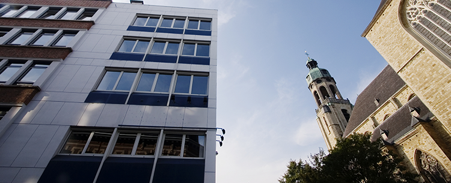
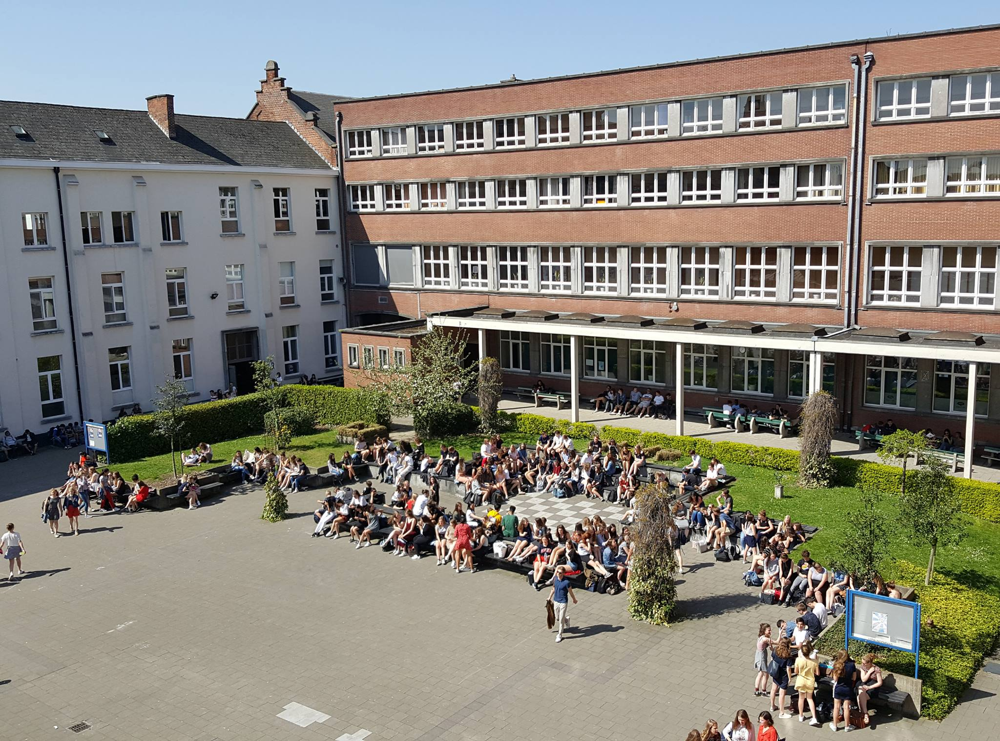

Over mij
Wat studeer ik?
Ik volg het graduaat programmeren aan Thomas More op campus Sint-Andries Antwerpen. Dit is een 2 jarige opleiding in dagonderwijs waarin je klaar wordt gestoomd tot (web)developer.

Bron: Thomas More
Meer info over het graduaat programmeren
Wil je meer weten over wat deze richting in houd bekijk dan deze website.

Bron: Facebook OLVP Sint-Niklaas
Voor graduaat
In het middelbaar heb ik de richting Boekhouden-Informatica gevolgd aan OLVP in Sint-Niklaas. Na het middelbaar heb ik de richting Toegepast Informatica gevolgd aan Karel de Grote Hogeschool Groenplaats. Na 1 jaar ben ik hiermee gestopt omdat dit te technisch was voor mij en ik meer praktijk zocht.
Ambitie
Graag wil ik na de opleiding Graduaat programmeren aan de slag gaan als (web)developer.
Curriculum vitae
Heeft u interesse in mijn cv, klik dan hier.